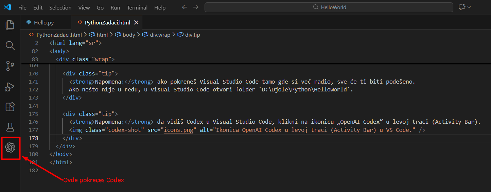

Python zadaci za početnika
Uputstvo za izradu: svaki zadatak reši u posebnoj `.py` datoteci.
Koristi jasna imena promenljivih i dodaj kratke komentare gde je potrebno.
Testiraj program sa nekoliko različitih ulaza.
Kratko uputstvo za korišćenje AI (ChatGPT i Codex):
koristi AI kao pomoćnika, ne kao zamenu. Postavljaj konkretna pitanja
(npr. „objasni kako radi Bubble Sort“ ili „proveri moj kod“), zadrži svoje
rešenje i pokušaj da razumeš svaki red koda koji dobiješ. Ako AI predloži
kompletno rešenje, prvo pokušaj sam, pa uporedi i pitaj gde grešiš.
Kako da koristiš Codex u Visual Studio Code:
- Instaliraj dodatak „OpenAI Codex“ iz Extensions (Ctrl+Shift+X). (ovo sam ja već uradio)
- Prijavi se ili unesi API ključ u podešavanjima dodatka. (ovo sam ja već uradio)
- Otvori `.py` fajl i napiši kratak opis zadatka u komentaru ili u poruci Codex‑u.
- Koristi komande kao: „objasni mi ovaj kod“, „nađi grešku“, „predloži poboljšanje“.
- Pročitaj predlog, izmeni po potrebi, pa pokreni kod da vidiš rezultat.
- Ako nešto nije jasno, traži objašnjenje korak‑po‑korak.
Cilj je da vežbaš petlje, rad sa brojevima i nizovima (liste).
1) Suma cifara višecifrenog broja
Napravi program koji za uneti višecifreni broj računa zbir njegovih cifara.
- Unos: broj (npr. 4827).
- Izlaz: suma cifara (4 + 8 + 2 + 7 = 21).
- Koristi petlju i operator `%` i `//`.
2) Sume prvih 10 brojeva
U istom zadatku uradi sledeće podtačke.
- a) Izračunaj zbir brojeva od 1 do 10 (koristi `for` ili `while`).
- b) Izračunaj zbir prvih 10 parnih brojeva (2, 4, 6, ...). Proveri parnost sa `n % 2 == 0`.
- c) Izračunaj zbir prvih 10 neparnih brojeva (1, 3, 5, ...). Proveri uslov `n % 2 != 0`.
3) Sortiranje elemenata niza - rastuće
Unesi 10 celih brojeva u listu i sortiraj ih rastuće.
- Nije dozvoljeno koristiti ugrađene funkcije za sortiranje.
- Implementiraj Bubble Sort i prikaži listu pre i posle sortiranja.
4) Sortiranje elemenata niza - opadajuće
Unesi 10 celih brojeva u listu i sortiraj ih opadajuće.
- Nije dozvoljeno koristiti ugrađene funkcije za sortiranje.
- Implementiraj Bubble Sort i prikaži rezultat opadajuće.
5) Aritmetička sredina niza
Izračunaj aritmetičku sredinu unetih brojeva u listi.
- Izračunaj zbir svih elemenata.
- Broj elemenata je `len(lista)`.
6) Proizvod elemenata niza
Izračunaj proizvod svih elemenata liste.
- Postavi početnu vrednost proizvoda na 1.
- U petlji množi svaki element.
Napomena: ako pokreneš Visual Studio Code tamo gde si već radio, sve će ti biti podešeno.
Ako nešto nije u redu, u Visual Studio Code otvori folder `D:\Djole\Python\HelloWorld`.
Napomena: da vidiš Codex u Visual Studio Code, klikni na ikonicu „OpenAI Codex“ u levoj traci (Activity Bar).
